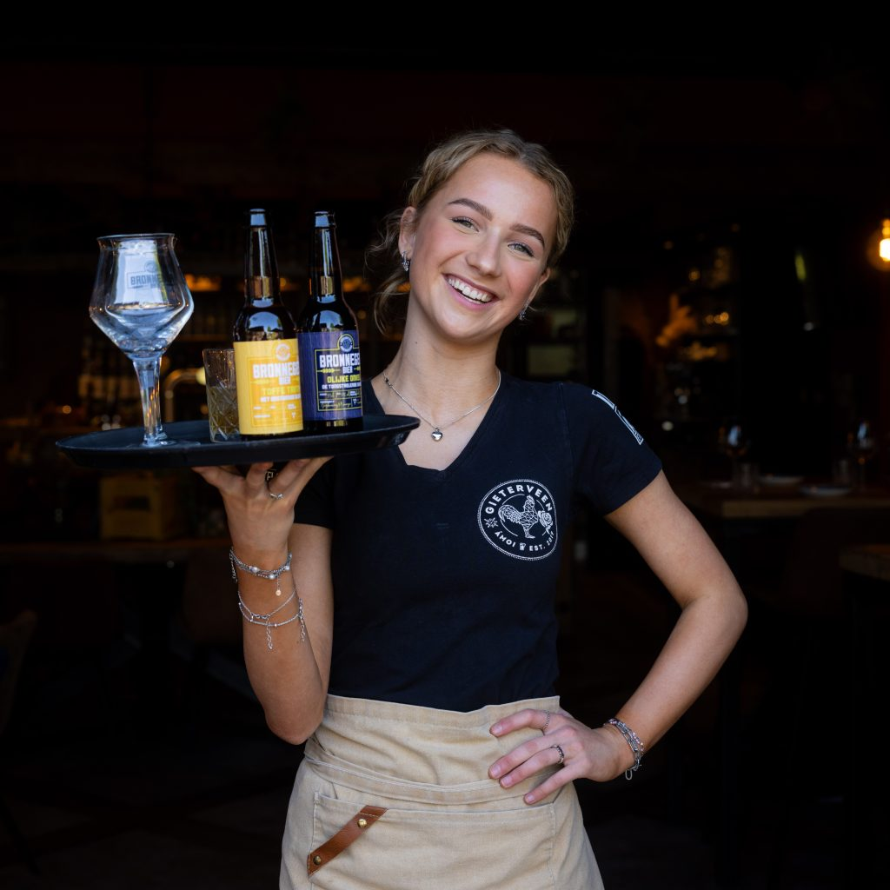
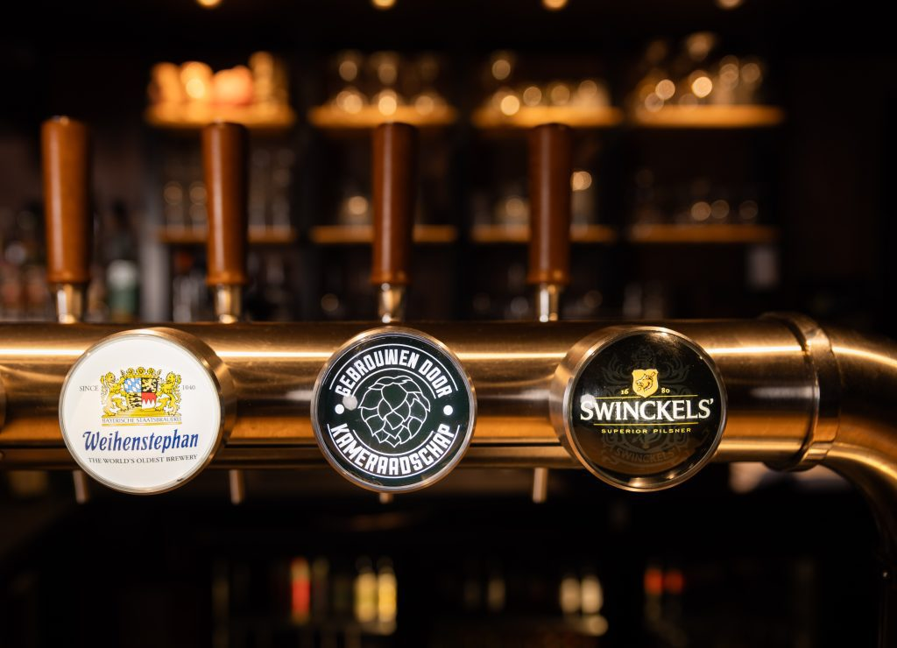

Trouwen & vergaderen
Van een avondfeest voor 100 gasten tot een compleet dagprogramma met ceremonie in ’t Kleine Kerkje. En vergaderen kan vanaf 10 personen, met lunch of diner erbij.
Eten & Drinken in Gieterveen
Een avond bij ÁMOI is een culinaire roadtrip langs verfijnde gerechten en verrassende bereidingen, met een vleugje Drentse eigenzinnigheid.
Woensdag t/m zondag vanaf 17:00 · Broek 1, Gieterveen
“MOI” hetgeen wij zegg’n veur zowel ankomst as ofschaid en veur elk aander moment van de dag, waorbij d’r in de umtrek van Gieterveen dikwijls “Á” veur aan komt, geet dizze groet vaok saomen mit ’t opsteken van de wiesvinger mit de doem richting ’t eigen gezicht.
“ÁMOI!”
“MOI” hetgeen wij zeggen voor zowel aankomst als afscheid en voor elk ander moment van de dag, waarbij er in de omtrek van Gieterveen vaak “Á” vooraan komt, gaat deze groet vaak samen met het opsteken van de wijsvinger met de duim richting het eigen gezicht.
“ÁMOI!”

Van kerstavond donderdag 24 december tot en met zondag 27 december, derde kerstdag, nemen we je mee op een culinaire wereldreis: smaken van het Verre Oosten tot het Midden-Oosten en van Thailand tot de Verenigde Staten. Kies voor vlees & vis of volledig vegetarisch. Ook kinderen krijgen hun eigen kerstmenu.
Een feestelijke eerste verrassingsbestemming als start van de wereldreis.
Vlees & visZalmroulade, avocado, dragonfruit
VegetarischRoulade van wortel en courgette, avocado, dragonfruit
Vlees & visKort afgebrande beef tataki, daikon, Japanse vinaigrette
VegetarischKort afgebrande coeur de boeuf-tomaat, daikon, Japanse vinaigrette
Romige pastinaaksoep, za’atar, amandel, peer
Vlees & visLangzaam gegaard buikspek, gochujang-cranberryglaze, rode kool, gekarameliseerde appel
VegetarischMush belly met dezelfde garnering
Vlees & visKalkoenrollade, marsalajus, zoete aardappel, marshmallow-saliefluff, spruitjes
VegetarischRoulade van spitskool en paddenstoelen met dezelfde garnering
Een feestelijk kerstdessert als afsluiting van de wereldreis.
Kerstavond, eerste en tweede kerstdag of zondag 27 december. Geef bij je reservering aan welk menu je kiest, en laat ons weten of er allergieën of dieetwensen zijn.
Reserveer voor kerst
Van een frisse mocktail tot een fles uit de kelder: bekijk onze drankkaarten.
Met een feestzaal met podium, ’t Kleine Kerkje recht tegenover de deur in het Drentse Gieterveen is ÁMOI ook de plek voor je bruiloft, vergadering of groepsuitje.
Van een avondfeest voor 100 gasten tot een compleet dagprogramma met ceremonie in ’t Kleine Kerkje. En vergaderen kan vanaf 10 personen, met lunch of diner erbij.
Op zoek naar een uitje met je team, collega’s of vrienden? Lees meer over klootschieten bij ÁMOI.
Meer over klootschietenGieterveen en de fietsroutes in de buurt: een mooie aanleiding voor een stop bij ÁMOI.
Gieterveen Fietsen| Maandag & dinsdag | gesloten |
|---|---|
| Woensdag | 17:00 – 22:00 |
| Donderdag | 17:00 – 22:00 |
| Vrijdag | 17:00 – 00:00 |
| Zaterdag | 17:00 – 00:00 |
| Zondag | 17:00 – 22:00 |
Woensdag 30 december t/m vrijdag 1 januari zijn we gesloten. Zaterdag 2 januari zijn we weer open.
Buiten deze tijden reserveren of de mogelijkheden bespreken? Neem gerust contact met ons op.
Genoten van je bezoek? We horen het graag via een review of op social media: #TeamÁMOI, @AMOIgieterveen.
Een vraag, bericht of opmerking? Vul het formulier in, dan nemen we contact met je op.